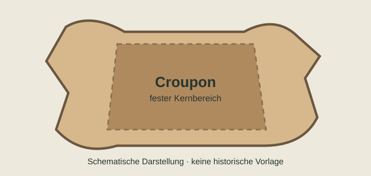

Ein Treibriemen brauchte belastbares, gleichmässiges Leder. Entscheidend waren die Auswahl geeigneter Hautpartien, das Gerbverfahren und die spätere Zurichtung.
Die Lederfabrik in Fahrnau: zwei Originalaufnahmen
Die folgenden Bilder zeigen dokumentierte Arbeitsräume von Gebrüder Krafft. Sie sind keine allgemeine Illustration, sondern Aufnahmen des historischen Betriebs.


Von der Rohhaut zum Leder
- Rohhaut und AuswahlQualität und Hautpartie bestimmen, wofür ein Stück Leder geeignet ist.
- VorbereitungReinigen, Weichen und weitere Vorarbeiten bereiten die Haut für die Gerbung vor.
- GerbungGerbstoffe machen die Haut dauerhaft verwendbar. Historische Verfahren und konkrete Rezepturen unterscheiden sich.
- ZurichtungTrocknen, Bearbeiten und gegebenenfalls Fetten beeinflussen die Gebrauchseigenschaften.
Croupon und Riemenleder
Für belastete Riemen wurden bevorzugt feste, möglichst gleichmässige Bereiche der Rinderhaut verwendet. In der Fachliteratur spielt der Rücken- beziehungsweise Crouponbereich eine besondere Rolle. Nicht jedes Leder eignete sich gleich gut für die Kraftübertragung.
